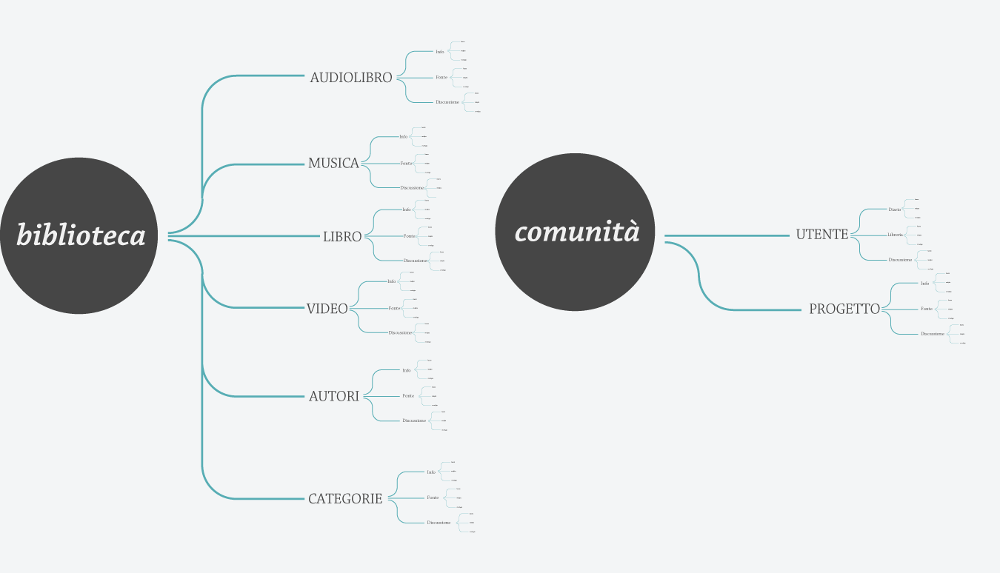

A new Liber Liber
My story talks about the restyling of Liber Liber, an Italian free digital library website. The Liber Liber’s contents are created by volunteers that digitize (converting from analog to digital) and upload different kinds of artistic works such as books, music or videos. My goals were: simplify the website information, integrate some digitizing instruments (more than one) for the community on it and create a new brand identity.
The Liber Liber Tree
To simplify the website information I organized it into 2 main categories: Library and Community. The first category collects all artistic works, while the second one collects useful pages for the community as project (forum) and profile page. Each page has sub-pages that can be edited by a user (to avoid some incorrect editing each one is saved in history). Create is the special page where users can create contents uploading new artistic works.
A Liber Liber’s user can be called a digital amanuensis. Amanuensis because he/she copies what has been written by another and digital because he/she copies analog content in digital form.
Liberian Manuscript
Inspired by the amanuensis' world, I chose Adobe Chapparal Pro, a perfect typeface for the screen reading that with its design call to mind the Italian Humanist minuscule. The pictograms have been created from Chapparal design and the colours are taken from an antique manuscript. Each digital amanuensis can create a new initial – which is the logo – for themselves or for an artistic work, thanks to an interactive initial creating system.

Welcome to the New Liber Liber
On the new Liber Liber website users can find what they need. On the Library readers can find all artistic works and save them in their own personal bookcase. In each book they can change background colour, font size, text (if they find any typos) and read offline exporting it to e-pub. Volunteers can create an index for readers (more than one, maybe I can use “categories”), digitize books all together organizing the work on the project page.

Liber Liber Heart
The heart of Liber Liber lies in its active and passionate readers and writers. Thanks to their work Liber Liber can live. The logo is dedicated to them, in fact there isn’t just one logo but a logo for each person and each artistic work they digitized. It’s thanks to them that Liber Liber is getting better day by day.